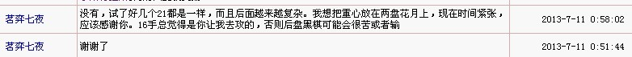

裁判请进我和天涯独行客的帖子。我回复坐标后，天涯独行客没有任何表示。直到我回复棋盘后，天涯独行客立即回棋。
记得在开赛时我就表明过我的电脑可能有时候看不到棋盘。
六、竞赛规则
3、行棋
（1）根据对局规则，由对局者发表的可以合理、明确、唯一地表达出落子位置且不与之前的所有行棋矛盾的回帖均视作合理行棋；
那么我行棋后的时候计算为谁的？（若算我的，我要申诉，因为我回复坐标，根据规则，视同回棋。）
另外，这次比赛中，一方冲4总是会直接会另一方挡棋。但天涯独行客在和我还有掌旗如烟的对局中都没有对我们帮其挡冲4做出任何回复。（如果认可，则他可以直接回棋。若不认可，也应当回复说明一下）。
例：之前天涯在和我那盘对局的过程中，就有一次帮我挡了一个冲4.我当时认可，所以直接回棋了。
既然现在天涯什么都没有回复，是否可以认为其没有异议默许了？如果可以认定是这样，那我们之前的回复行棋根据规则都是成立且有效的。那从我们回帖后起，都应该计算天涯时间。
而天涯独行客是直到我们两位重新回帖，只冲一个4，他才回帖堵了冲4.这中间的时间该如何计算？我们为了保险，才重新回了一帖只冲4，想看看天涯的反应。结果果然如此。我认为此问题涉及我们的利益，一经发现，应当在比赛对局中立即指出。对于关于时间问题如何计算，和冲4帮挡的问题这两点请裁判及时给出明确答复，谢谢！
该问题已经向裁判长反映，裁判长反馈结果应该由裁判员踵酃处理，麻烦裁判员了！
［此帖子已被 屏蔽 在 2013-10-1 6:11:35 编辑过］
目测可以判天涯独行客违例，然后呢，按规程，你可以果断大胆行坐标为了整洁，请大家以后有问题到这里 ShowPost.asp?ThreadID=20001 反应。
3、行棋
（1）根据对局规则，由对局者发表的可以合理、明确、唯一地表达出落子位置且不与之前的所有行棋矛盾的回帖均视作合理行棋；
-----------------------------------------------------------------------------
屏蔽裁判长不是已经回答你，你的坐标视为合理行棋了吗？
对方不理那是对方的事，你大可以等到对方超时呀。
另外补充说明一点：在我看来，上传地毯谱的性质帮别人行棋和帮别人挡冲4是完全两个人概念。
因为地毯谱是自己做的，每个人不可能都有正版终结者。即使有，扫描出来的结果也可能不同。同时，也不排除对方故意标c的欺骗性。
所以一方劝降，另一方不认可，想多走几步，我觉得完全在情理之中。一方劝降上传了地毯谱并帮对手行棋，而另一方不认可自己恢复行棋，这种情况我觉得正常，劝降和地毯谱只是参考，比赛应该以对手回复的明确坐标视为行棋。
而一方冲4对于另一方来只有唯一一个点可以行棋，而且这个点不需要什么计算。我觉得可以这么理解，一方冲四主动帮对方挡，就说明没有想过靠这个冲4或者耍耍手段去赢。因为谁都知道这是网战，冲4不挡几乎不可能。
当然如果有的棋手真的不愿意帮别人挡冲4，也不想别人帮他挡冲4，我想暂时也可以认可。因为规则里对于这一点没有明确定义。
但我觉得至少应该在对局中说明一下，让对手和大家都了解他这个想法吧！如果社呢么都不说，是否可以默认为其认可可以别人帮他挡冲4.
更为可笑的是：请看天涯和我的对局，之前他主动帮我挡冲4，然后我人可回复了，他也没说什么。而我帮他挡冲4时，他既不说明也不回棋。直到我重新回复只冲一个4，他才回复堵了这个冲4.包括对于掌棋如烟的对局他现在也是如法炮制。
那他这种行为，对于这个大家都默认的潜规则，他自己也没有通过回复表达给对手任何异议。但现在他在比赛中对自己有利时就帮别人挡冲4，而对自己不利时就用这种手段。其行为前后不一致，是否构成违例？是否有投机取巧之嫌？是否可以直接判负？
好的，第一个问题时间问题OK了，现在第二个问题：帮挡冲4是否可行？对方没有指出不认可，是否可以默认为对手认可？
同时对方对于帮挡冲4前后做法不一，如何判罚处理？谢谢裁判员~
［ 茗弈七夜同学于 2013-7-16 10:17:29 时花20金币送鲜花一朵］
［ 茗弈七夜同学于 2013-7-16 10:17:29 时花20金币送鲜花一朵］
［ 茗弈七夜同学于 2013-7-16 10:17:29 时花20金币送鲜花一朵］
［ 茗弈七夜同学于 2013-7-16 10:17:29 时花20金币送鲜花一朵］
［ 茗弈七夜同学于 2013-7-16 10:17:29 时花20金币送鲜花一朵］
［ 茗弈七夜同学于 2013-7-16 10:17:29 时花20金币送鲜花一朵］
［ 茗弈七夜同学于 2013-7-16 10:17:29 时花20金币送鲜花一朵］
在唯一防的情况下， 帮对方挡冲4，很好的举动呀。
裁判员表示赞许。当然了， 因为规则没有明说， 所以对方有权申诉。
不过有什么意义吗。 有帮挡冲4，还不满意呀？
荒唐，我没有做任何有违规则的事，还说要判我违例，是版主就了不起吗？就可以为所欲为。
只要我没有超时，我就可以不做任何回复，我没有任何言论说我没有认同你的行棋，你自己想当然，又重新回复，我还莫名其妙呢，但为了多一事不如少一事，我没有说什么，就直接回了棋。我有何错！！
你已经回棋，我有权任何时候回棋，哪怕是等到超时也是我的权利，现在你重新回棋，我是不是可以视为悔棋，请裁判给予回道，对这样重复行棋的，两次回棋不相同的方式，是不是该判为悔棋违例！！
本来我什么都没有说，也没有啥意见，既然你大张旗鼓挑事，用词那么霸道，我将坚决应战！在此向裁判提出2点看法：1、七夜必须为自己的不当言论、既无理有无聊的指责公开道歉。2、对七夜悔棋行为予以裁判认定。3、对本次比赛控制多个号子，操纵比赛，下假棋的行为予以查处
大家可以去看比赛帖啊，前面他报坐标，我没有表示任何异议，一直都是那么走，对帮着挡四的行为，我也做了，我们并没有争议，我只是拆棋慢了点，一直没有回棋，他就想当然，认为我搞什么鬼，自己莫名其妙地重新回了一次棋，我不知道他什么意思，也不想多事，就随手回了，这中间我有错吗？裁判也没有任何判罚，有必要那么大张旗鼓地进行指责，还强硬地要求裁判怎么样？我晕啊
我只想好好下棋，不想惹任何事情，没想到躺着也中枪啊
在此向裁判提出2点看法：1、七夜必须为自己的不当言论、既无理有无聊的指责公开道歉。2、对七夜悔棋行为予以裁判认定。3、对本次比赛控制多个号子，操纵比赛，下假棋的行为予以查处
1.裁判员不是法官，没资格要求某人道歉
2.按规程3.2
3.请提供证据， 裁判组会跟进的。
对裁判的答复，本人表态如下：
1、表示理解，并接受解释。我希望裁判对七夜的申诉中指责我的内容，逐点予以认定，澄清我的不白之冤，如果确实是我的错，也请明确指出，我会虚心接受，并诚恳道歉。
2、仔细阅读规程，对裁判的解释表示理解。本来我就无意追究什么，提出此点申诉，也是对方无理指责的反击，确实有些意气用事，给裁判增添不必要的麻烦，在此表示真诚的歉意。
3、七夜和如烟的对局，明摆在哪里，眼明人不难判断。至于操纵比赛，控制多号的棋手就是赌徒，你们管理层个个都知道，证据根本无需我提供。你们不可能，也没有办法处理。
某些管理层的人公开宣称要搞搞我（相关证据已经提交有志），随便，我愿意奉陪！撕破所谓的公正面孔，跳出来表演表演也好！就算让大家看场好戏吧！
七夜的申诉从来没被受理过。
至于你说管理层的人公开宣称要搞搞你，这个裁判员表示不清楚，局外的事，裁判员爱莫能助。希望你一切顺利。
我只能说在对局中，管理层动不了你。
建议大家都冷静冷静。
［ 华夏使者同学于 2013-7-17 7:44:20 时花20金币送鲜花一朵］
［ 华夏使者同学于 2013-7-17 7:44:20 时花20金币送鲜花一朵］
［ 华夏使者同学于 2013-7-17 7:44:20 时花20金币送鲜花一朵］
［ 华夏使者同学于 2013-7-17 7:44:20 时花20金币送鲜花一朵］
［ 华夏使者同学于 2013-7-17 7:44:20 时花20金币送鲜花一朵］
如烟版主有境界
尊敬的如烟大姐啊，你对论坛的贡献和人品，我一向钦佩，对你没有任何意见。我没有任何针对你本人的意思。
这件事不是我挑起来的，我是被动参与，我早厌倦了五子棋界的纷扰，不想参与搅合，这次本着对新规则的尝试，参与了比赛，一直都闷声下棋，别人下棋我就回，可是就这样还被人揪出来，起初我也只是想解释一下，可是我一发帖就被屏蔽（这点应该是我理解有误，管理者没有错），而攻击我的帖子到处都是，心里就只冒火，忍不住就展开反击。
对于赌徒，我自认不是很了解，我只知道他是个棋痴，在爱五子网很活跃，水平也很高，我和他没有过交往，我也不可能做过对不起他的事。可是每次涉及到我的事情，甚至我根本没有参与，他都会用轻蔑的语气来说我。对我的解释从来都不予理睬，动辄摆出一副我不怕人骂的姿态。我对赌徒本人谈不上意见，但他的做法我很难接受。我根本没有做什么，却被他说成用骨灰级的盘外招，要剥夺我的权利和尊严，这样的言论谁受得了啊。
我还是那个观点：如果我确实有错，欢迎批评，但是请冷静了解清楚事情之后，法庭还给被审判者以申诉权，都是五子棋的爱好者，为什么不能听听别人的申诉，非得要戴帽子、打棍子呢。如果对我本人有看法，欢迎沟通交流，不愿交往，互不搭理就是了，没有必要带着有色眼镜针对我，在论坛吵吵，其实伤害的不仅仅是当事者，更多的伤害的是五子棋。
我做为一个参与五子棋十几年的老人，对任何真心为五子棋付出的人，都是真心的钦佩和感激，包括和我闹过矛盾、素不相识的人。谢谢如烟大姐的劝解，我对赌徒的棋艺没有任何不服气，只是不喜欢他动辄针对我。如果他愿意平等交流，我愿意交这个朋友，他对我的质疑，不管是公开的，还是私下的，我也愿意心平气和、平等地沟通交流。
我的反击和申诉，1、是想告诉大家真相，还自己一个清白。2、是想告诉那些挑事的人，你用来攻击别人的手段，别人也同样可以用来攻击力，想骂无好言，最后受伤害的只能是彼此，只能是五子棋。
事情到此为止吧！！！我收回我所有的申诉和反击，同时也向所有被波及到的人表示歉意。如果可以的话，拜托如烟大姐，把我相关言论都删除吧，还论坛一个清静，还五子棋一个清静。我以前、现在，包括将来，都不想参与搅合任何事情，我只想静静地研究五子棋棋，虽然水平很烂，但是我喜欢。
再一次，表示我真诚的歉意！
我和七夜的分歧根本不是对规程的理解不同，在行棋过程中，我们的做法完全相同，是七夜看我很长时间没有回棋，就胡乱恶意猜测，提出申诉，然后引起网络不明真相的人附和，进而上纲上线对我进行道德审判，我才不得不发声，予以驳斥，
我驳斥的也根本不是对规程的不同理解，我表达的是我根本没有做有损任何人的事，不该被谴责
终于上电脑啦,关于七夜和如烟号的比赛情况,俺在我的论坛信箱里抓个图给你看看哈
这个是我宿主用我的号给七夜发的短信:
下面这个是七夜的回信:

你看,如果他俩私下里有协商比赛结果什么的,也不至于用我的号当媒介在信箱这里客气
好啦,我只能做到这里啦,希望能帮你们消除误会,其他的我就不掺合啦
这件事本来我不想再说，现在天涯要扭曲真相，我不得不说。
请大家都去看他和我的对局。根本不是长时间不回棋的事情。
两点：第一，他主动帮我挡冲4，却不认可我帮他挡冲4.
第二，他没有任何说明，我指出他的行为完全合情合理，我说过对事不对人。换成别人这么说，我也会这么做。
正如如烟说的那样，大家都是聪明人，这不是看谁口才好，只看过程就知道了，事后说好听话想欲盖弥彰，只会越描越黑。
大家请看，如果天涯真的是像他自己标榜的那样，我回了坐标且帮他档冲4他迟迟不回棋，我再发一次只是冲4，他就直接回棋了。
而且回的不是按照我的坐标，是按照之后我冲4的，对如烟那盘天涯的做法完全一致。这还用解释吗？明眼人都看得懂的。
对此我不想多说，只是想感谢裁判，如烟大姐，赌徒和各位棋友们。五子棋还是要靠大家去发展的，我们既然选择了当棋手，就应当有这样一份觉悟。看到大家这么热心，裁判这么认真负责。虽然规则上存在弊端，但我依然很感动，很欣慰！
鉴于刚才看到天涯还帖子里还有攻击我，如烟和赌徒，我不得不说出这些真是的情况，大家都请看吧~
事实就是天涯迟迟不回棋，回棋也不按照我回帮自己的对手挡冲4复的坐标，以及如烟帮挡冲4后的来回。一定等到我们重新回复只冲4他才回。
这说明什么呢？而且退一步说：即使他不认可我们帮其挡冲4，大可以说明。，不然根据之前他帮我挡冲4，其他选手也基本都这么做了。他什么也不说，我和如烟当然认为其默认了。
然后我第一时间发帖叫来了裁判。我的意思很明确了就两点：第一：我们有效回棋，时间是否计算天涯？
第二，天涯在和我对局中对于冲4帮挡这一情况前后做法不一致，是否构成违例？或者直接判负？
现在天涯还居然说我和如烟都回复了两次，说我们“悔棋”，实际是我们回复了两次。前一次帮他挡冲4，后一次不帮。
我再分析一下：（1）就算天涯事后辩解说，他就是在和我那盘对局中先要帮我挡冲4，而我没有提出任何异己，在他帮我挡了以后继续行棋了，是我自己认可的。―― 这点OK说得过去。
（2）就算天涯说自己忘记回复了，或者拆棋慢，那我们都已经帮挡冲4了，我回了坐标视同行棋，如烟回的更是棋盘。那他为何之后回复的不是按照我们的回复继续行棋。而是在我们之后又回复的不帮他挡冲4，只行一步棋的后面直接马上回棋挡了冲4.
而且在这个时候天涯依然什么也没说。他既没有说我们回复两次有问题，也没有说不让我们帮他挡冲4，更没有叫来裁判说我们回复两次的事情。原因何在呢？――分析到这里想必大家都笑了~一个人的第一反应往往是最真实的内心写照，无论他之后如何去掩饰。
（3）那我和如烟还有广大棋友是不是可以这么去理解，我们之前的有效回棋他置之不理，而之后的回棋他却回的很快。
如果他就是“只允许自己帮别人挡冲4，而不允许我们帮他挡冲4”那也没什么，规则之内嘛~但大家请注意，他在回复时没写这一句。
就凭这一点我才找的裁判，这就是违例啊！
总结：1.按照规则，天涯应该回复我们之前的行棋。
2.如果他因为不要我们帮他挡冲4，而去回复我们之后的行棋，他至少应当说明他不需要我们这么做。
3.他也一直没有找裁判反映这个问题，而是在我反映了，裁判处理了，如烟也说话了，他现在才说了一句是我们悔棋。
最后请大家留意一点：天涯最初申诉时，说的两句话非常有意思：第一，他说我“绑架裁规定判”，还说我“恶意中伤”
第二，他承认了自己之前帮我挡冲4，也说了规则没有明确规定，所以他可以自由选择不让我和如烟帮他挡冲
.
但请注意两点：在这个过程中：他至始至终没有向裁判提出过我们回复两次的事情，更没有在我或者是如烟的对局里说明他不需要我们帮他挡冲4.包括他一直在叫屈，要裁判还他清白，也一直没说出不要我们帮他挡冲4这句话。
他的回棋用实际行动证明了他不想我们帮他挡冲4，这是板上钉钉的事实。
但从头到尾他都没有强调过这一点，试问这符合逻辑吗？再问;如果我和如烟不说，他会主动说吗？
所以，大家都明白了吧，是不是又该要笑了~
［此帖子已被 茗弈七夜 在 2013-7-17 23:23:58 编辑过］
［ ^版徒同学于 2013-7-18 1:43:42 时花20金币送鲜花一朵］
［ ^版徒同学于 2013-7-18 1:43:42 时花20金币送鲜花一朵］
［ ^版徒同学于 2013-7-18 1:43:42 时花20金币送鲜花一朵］
［ ^版徒同学于 2013-7-18 1:43:42 时花20金币送鲜花一朵］
［ ^版徒同学于 2013-7-18 1:43:42 时花20金币送鲜花一朵］
［ ^版徒同学于 2013-7-18 1:43:42 时花20金币送鲜花一朵］
［ ^版徒同学于 2013-7-18 1:43:42 时花20金币送鲜花一朵］
［ ^版徒同学于 2013-7-18 1:43:42 时花20金币送鲜花一朵］
［ ^版徒同学于 2013-7-18 1:43:42 时花20金币送鲜花一朵］
［ ^版徒同学于 2013-7-18 1:43:42 时花20金币送鲜花一朵］
我都尽量冷静地和缓事态了，你如果还要胡搅，那我只能相应地回应了：
以下是你的原话吧，我没有做任何删减或断章取义吧！！
“那他这种行为，对于这个大家都默认的潜规则，他自己也没有通过回复表达给对手任何异议。但现在他在比赛中对自己有利时就帮别人挡冲4，而对自己不利时就用这种手段。其行为前后不一致，是否构成违例？是否有投机取巧之嫌？是否可以直接判负？”
你和我的对局，当时的局面明显是我占据优势，我认定可以必胜了，所以才特意仔细地进行拆解，绝对不是你辩称的“对自己的不利”，对一个自己有把握赢下来的局面，我需要用害你耗时，甚至超时的手段吗？
为了以正视听，我把相关局面的终结谱发布如下，大家自然可以验证。明明是你看形势不利，试图用搅局的方式，想让裁判按你的心意判罚我，从而骗取比赛的胜利，为了一盘比赛的胜利，你犯得着这样不择手段吗？
［ 茗弈七夜同学于 2013-7-18 0:36:35 时花50金币砸了你一个臭鸡蛋］
 bisheng.zip
bisheng.zip赏你个鸡蛋，哈哈~我也不多说了，大家都看得懂的
至于这个地毯谱和我要提出的观点无关，你对如烟和特拉斯那两局你都必败，你也是如法炮制的。
特拉斯不说什么，如烟的态度大家也都看到了